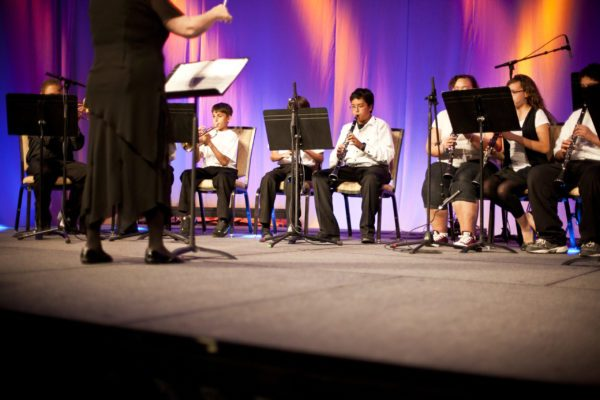

Music has shaped cultures and societies around the world for generations. It has the power to alter one’s mood, change perceptions, and inspire change. While everyone has a personal relationship with music, its effects on the culture around us may not be immediately apparent. So, how does music affect society? The impact of music on society is broad and deeply ingrained in our history. To demonstrate how deeply our lives are affected by music, let’s delve into the sociological effects of music and how it affects culture.
How Does Music Affect Society?
Music is an essential aspect of all human civilizations and has the power to emotionally, morally, and culturally affect society. When people from one culture exchange music with each other, they gain valuable insight into another way of life.
How Does Music Affect Human Emotion?
4 Ways Music Affects Your Emotion
- Positive Feeling: Music mostly makes us feel good. Positive feelings tend to broaden our mindset in ways that are beneficial to health and creative thinking.
- The Startle Effect: Our brainstem reflexes respond to sudden, loud, or dissonant music with surprise, laughter, or even fear.
- Being in Sync: Our heart rate speeds up or slows down to match the music. This synchronization is a source of pleasure.
- Emotional Contagion: We “catch” the emotions of others through music, just as we do in social interactions.
Listen To This Music and Refresh Your Mind📻
Zayn's Nobody Is Listening
album.
Zayn's full album
Better
The second song in the Nobody Is Listening
album.